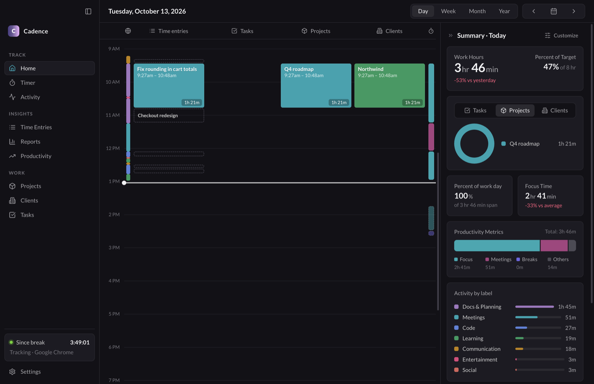
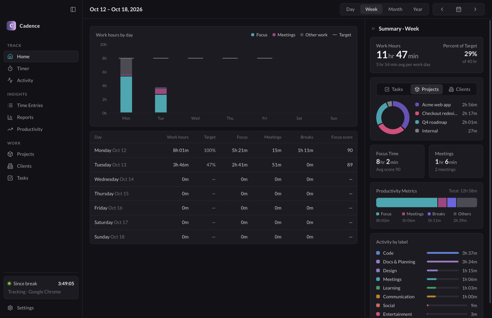
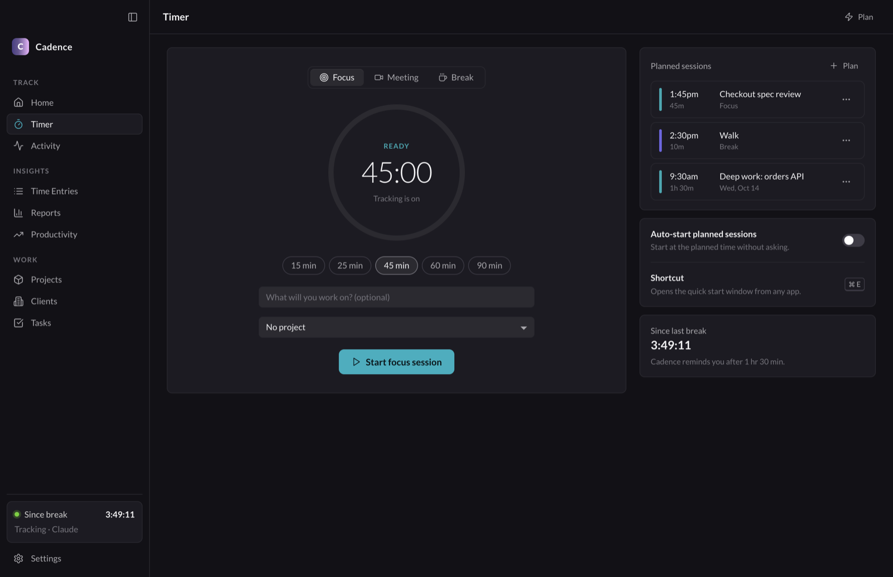
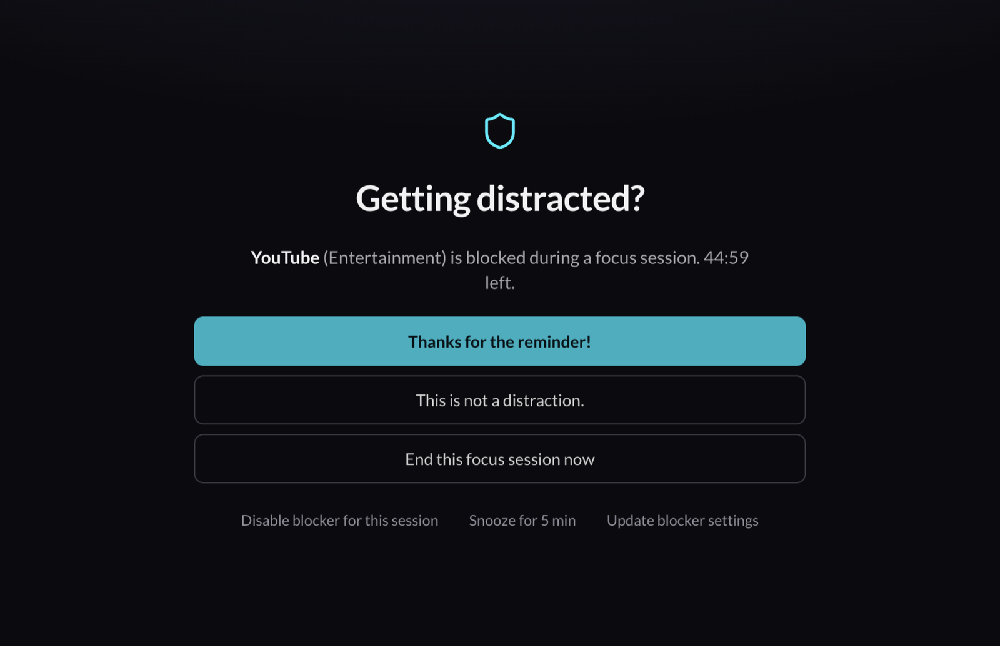
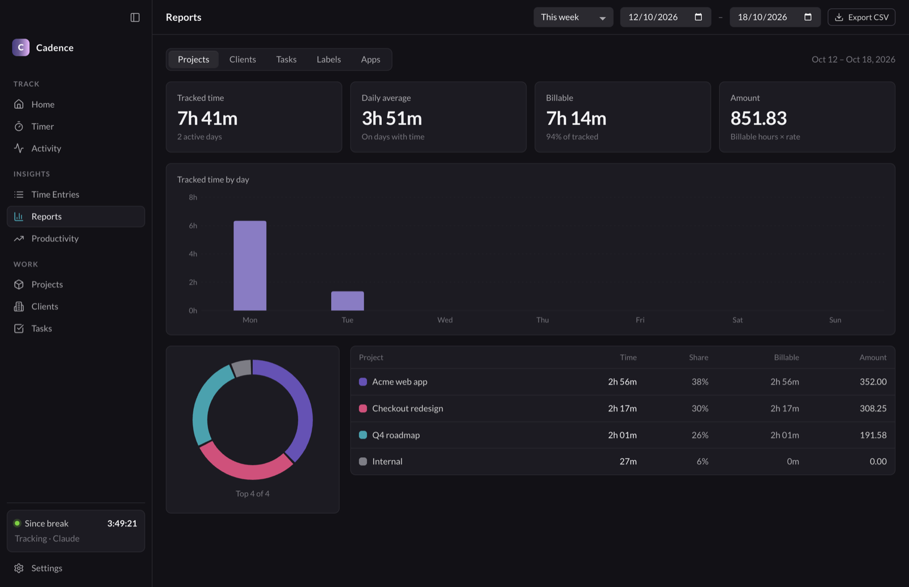

Know where your day went.
Cadence records the apps and websites you use, draws your day on a calendar, and helps you protect your focus time. It runs only on your Mac. No account. No server.

Calendar
Your day, already filled in.
Every app and website lands on the calendar as you work. You do not start a timer or fill in a timesheet at the end of the week.
- Lanes for activity, time entries, tasks, projects, clients and sessions.
- Drag across a lane to log time. Click a block to see the apps behind it.
- Week, Month and Year views show your hours against your daily target.

Focus
Protect the work that matters.
Press ⌘ E in any app to start a focus session. If you open YouTube or Reddit during focus, Cadence steps in. Turn on urge surfing, and it asks you to wait ten seconds before you choose.
- Focus, meeting and break sessions, planned ahead or detected automatically.
- Pomodoro sets, break reminders and a full-screen break window.
- A focus score after each session, and trends by week, month and year.


Reports
Bill your hours without a spreadsheet.
Group your time by project, client, task, label or app, for any date range. Billable totals add up while you work.
- Hourly rates on clients and projects, and budgets that show how much you have used.
- Keywords match window titles and suggest time entries for you to accept.
- Export to CSV for your invoicing tool.

Privacy
Your data stays in one folder on your Mac.
No network requests
Cadence has no account, no sync, no telemetry and no analytics. The source is open, so you can check this yourself.
Plain files you own
Activity is saved as JSON Lines, one file per day. Back it up, search it or delete it with the tools you already use.
You decide what it records
Remove window titles, keep only the website domain, record no URLs, or stop tracking an app or site completely.
~/Library/Application Support/Cadence/ ├── events/ │ ├── 2026-10-12.jsonl # one line per app or tab │ └── 2026-10-13.jsonl ├── db.json # entries, projects, sessions ├── rules.json # how apps are labeled └── settings.json
And more
Small tools for the rest of the day.
Desktop widget
A small timer in the corner shows your session, or the time since your last break.
Menu-bar timer
The current session is always in view. Start or stop it from the menu.
Rules you can read
Label apps and websites with regular expressions. Each rule has flags for focus, meetings and blocking.
Work-hour targets
Set a target for each weekday and mark days off, so a day off does not count against your week.
Activity log
Every app and website with its window titles, so you can find what you worked on last Tuesday.
Light and dark
Follows your system theme, or choose one. Supports the 12-hour and 24-hour clock.
Install
Ready in about a minute.
Download
Get the Apple Silicon or Intel disk image. Open it and drag Cadence to Applications.
Open it the first time
Cadence is not notarized by Apple yet, so macOS blocks the first launch. Right-click the app, select Open, then select Open again. You can also run this command:
xattr -dr com.apple.quarantine /Applications/Cadence.appAllow access
Allow Automation and Accessibility when macOS asks. Cadence uses them to read the name of the frontmost app, its window title and your browser's current tab.
Requires macOS 13 or later. Works on Apple Silicon and Intel. Supported browsers for URLs: Safari, Chrome, Brave, Edge, Arc and Vivaldi.
Take back your time.
Cadence is free and open source. Read the code, report a bug or send a pull request.